Frankie Flow: turning config code into a canvas
FrankieOne verifies people and businesses for banks, crypto and investment platforms — where accuracy is everything. But every customer rule change lived in raw JSON, edited by hand. I led the design of Frankie Flow: a workflow tool that turns that code into something customers can see, drag, and deploy themselves.
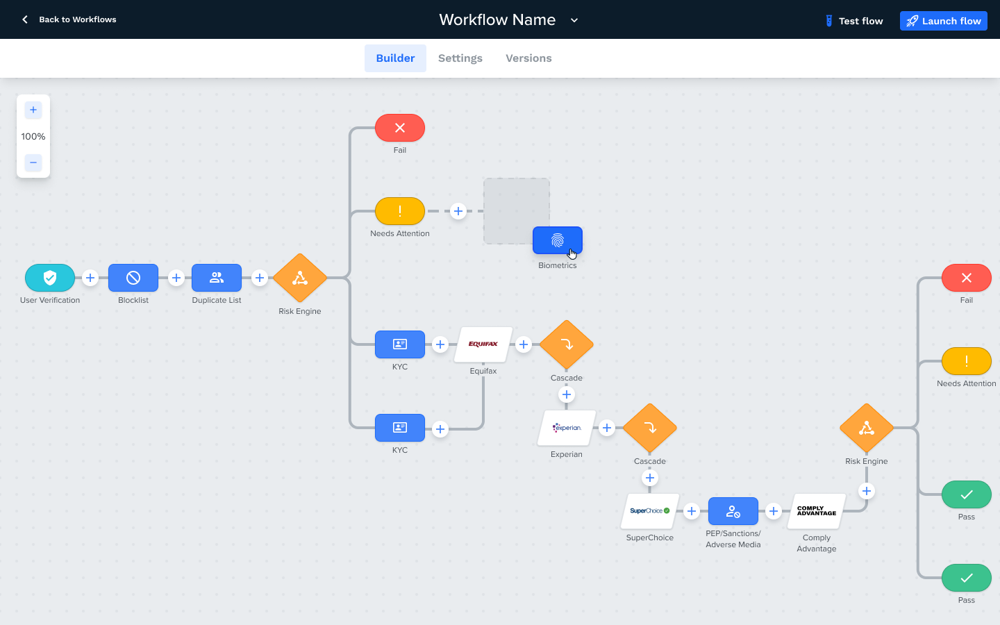
Every settings change was a Jira ticket
When a FrankieOne customer wanted to change their verification settings, the path looked like this: raise a Jira ticket → wait for the Tech-Ops team → an engineer hand-edits a JSON file → deploy.
Tedious for the customer, tedious for Tech-Ops — and, because a human was hand-editing the rules that decide who passes a bank's identity checks, prone to human error. Every mistake meant another cycle, further stretching the time it took for changes to go live.
Meanwhile, our international competitors already offered visual configuration their customers could adjust on the fly. The brief was feature parity — but the opportunity was bigger:
Self-service as the scalable solution: visualise the JSON so customers change and deploy their own config — no internal help needed. Tech-Ops gets its time back, customers get control within minutes instead of tickets.
Decoding the JSON into five objects
The real challenge wasn't drawing a canvas — it was understanding what the JSON actually did. Configuration holds a client's product settings: which products are on, customisable risk scores, and the conditions deciding how individuals and businesses are assessed through KYC and KYB checks.
Through extensive calls with the Tech-Ops team, we distilled every behaviour in the config file into five building blocks — each with its own shape and colour, so a glance tells you what it does:
Checks — blue rectanglesFrankieOne's core product offerings: biometric checks, KYC checks, fraud screening.
Conditions — orange diamondsSplit the workflow into lanes — the branching criteria a verification must meet.
Actions — coloured pillsTerminators that end the workflow: red (fail), yellow (manual attention), green (pass).
Connectors — white rhombusesThe external data sources FrankieOne calls on to perform the checks.
TemplatesPre-built, industry-compliant series of checks — saved config curated by FrankieOne.
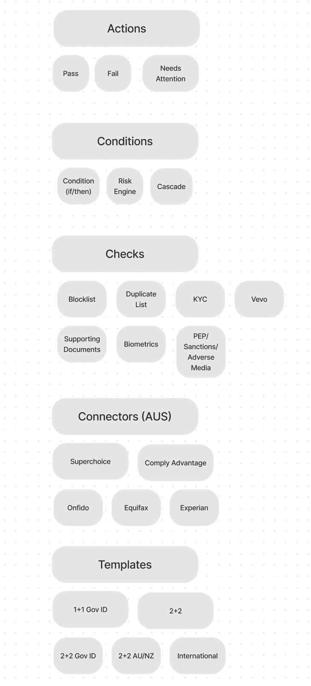
Proving the blocks against a real customer
A visual language is only as good as the messiest thing it has to describe. So before designing a single screen, we rebuilt the live config of one of our most complex customers using only the five blocks.
Shapes and flows were assigned to represent what the config was actually doing — and the blocks held up. If the system could express our hardest real-world case, it could express anything our customers would throw at it.
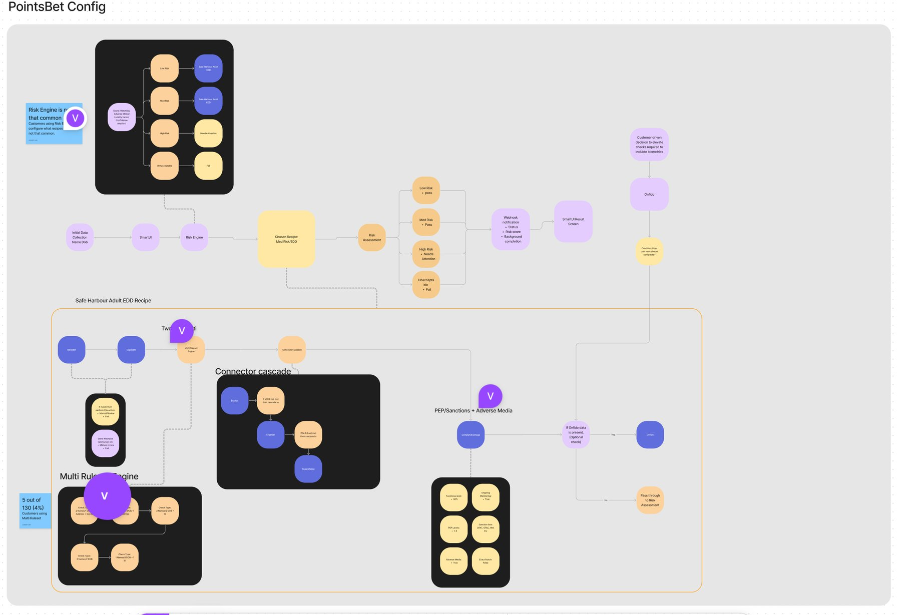
Two components carry the whole tool
Everything in Frankie Flow happens in two places: the canvas, where objects are visualised and arranged — and the side drawer, where each object is added and configured.
The canvas took its inspiration from Miro and FigJam: a free space where customers place objects in whatever order they wish, connecting them into the eventual workflow. The side drawer sits above the canvas, directly tied to the objects — one consistent place to add things and set their rules.
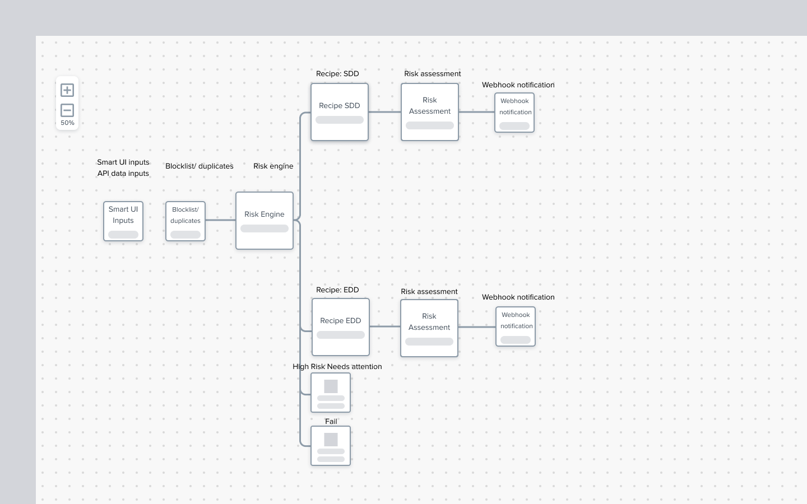
Filling in the details
Every object deployed on the canvas needed its own settings criteria, so that every configuration variation possible in JSON remained possible visually. That was the bar: the visual tool could be no less capable than the raw config file. It took many iterations to get there.

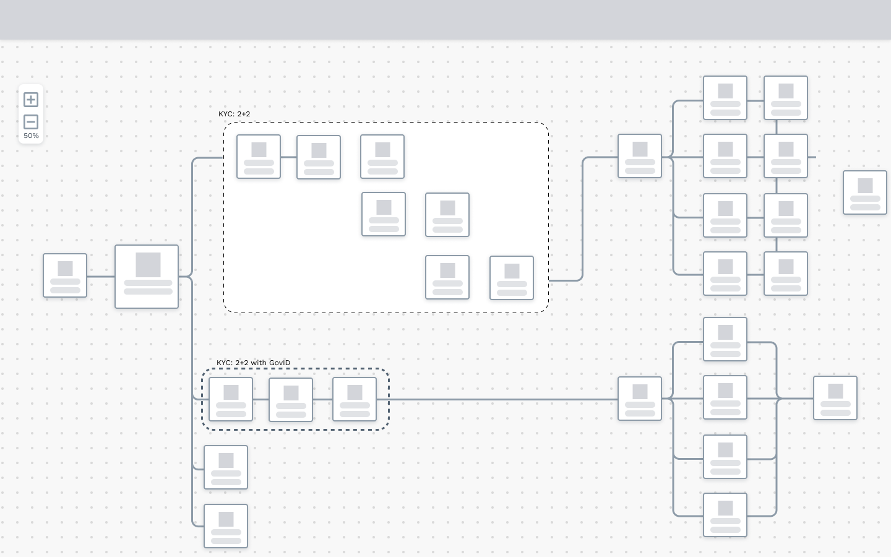
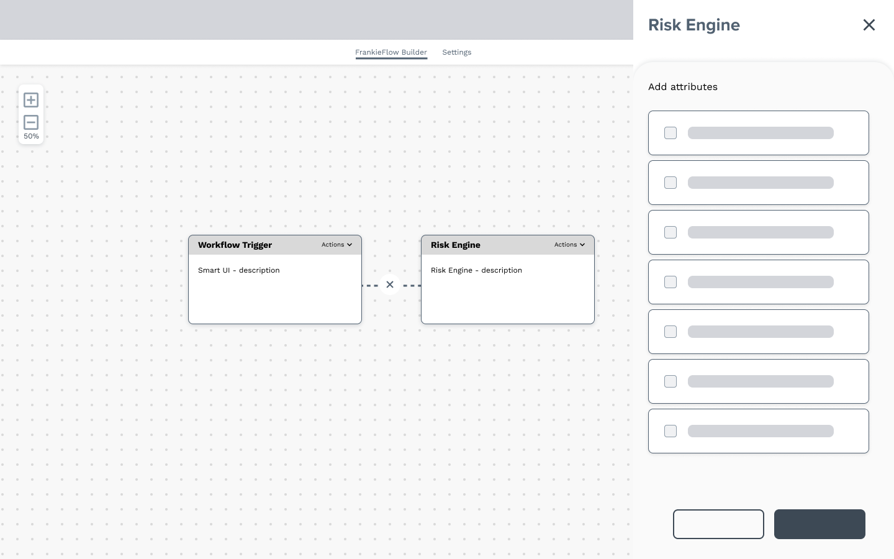
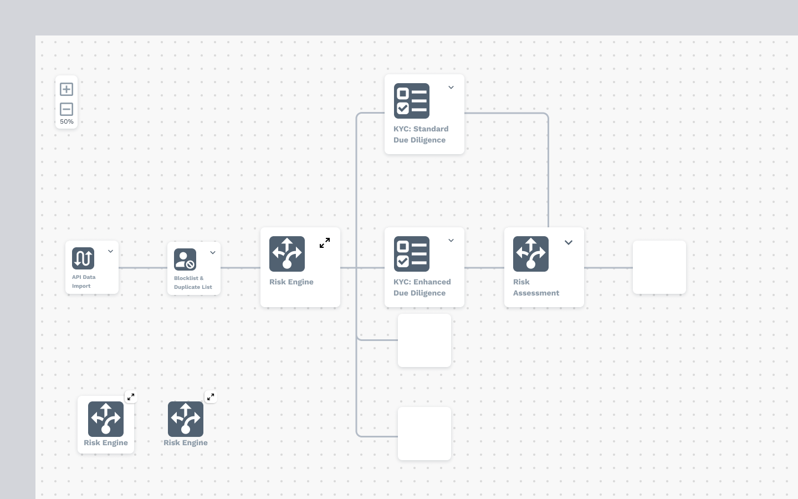
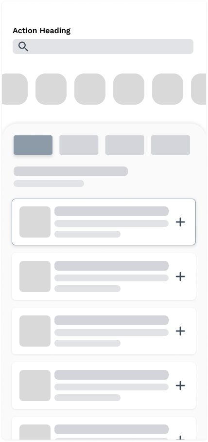
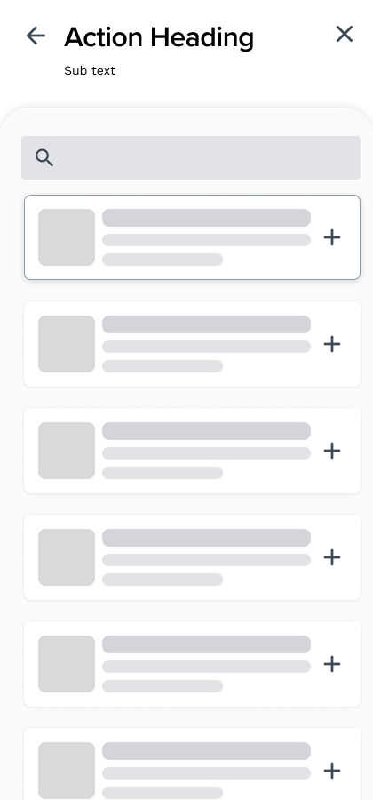
A canvas that speaks FrankieOne
The UI went through many iterations, leaning on FrankieOne's existing product styling — bold object colouring — so the tool felt native from day one.
- Distinct colours and shapes make every object category identifiable at a glance — blue rectangles for Checks, orange diamonds for Conditions, traffic-light pills for Actions, white rhombuses for Connectors.
- White circles with a blue plus invite the user to open the side drawer and add an object to that branch of the workflow.
- Branches can be picked up and reattached to other objects on the canvas — full control over the flow's structure.
- The canvas lives inside a workflow builder dashboard where config files are saved and edited (scoped for MVP 2, along with error messaging for invalid branch connections).
The side drawer
The drawer is where the workflow gets its brain — adding objects to the canvas and altering the settings inside each one:
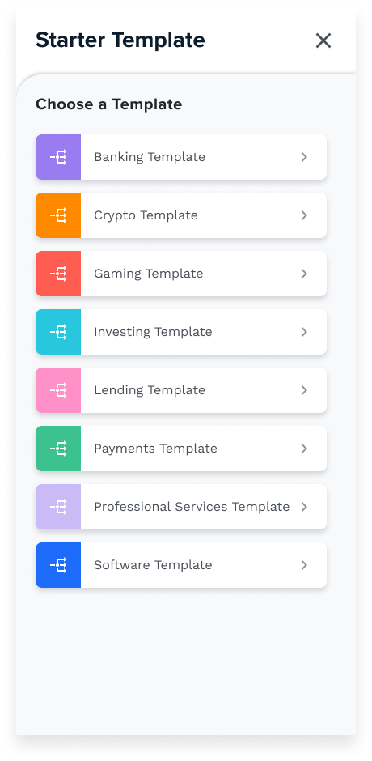
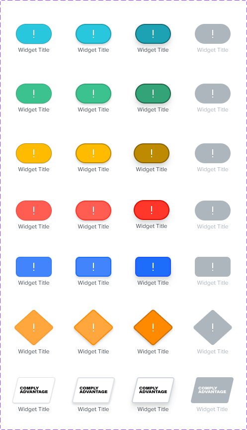
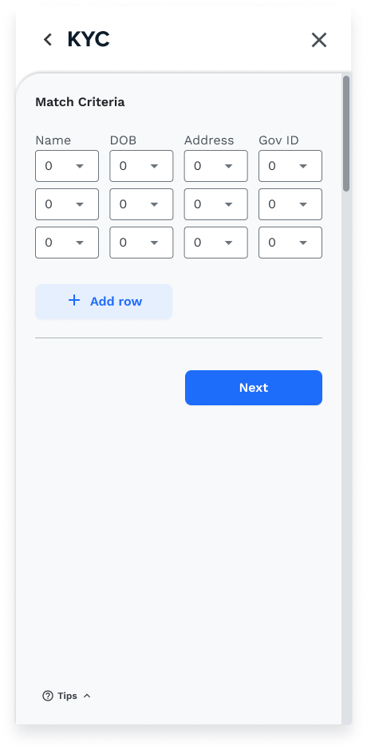
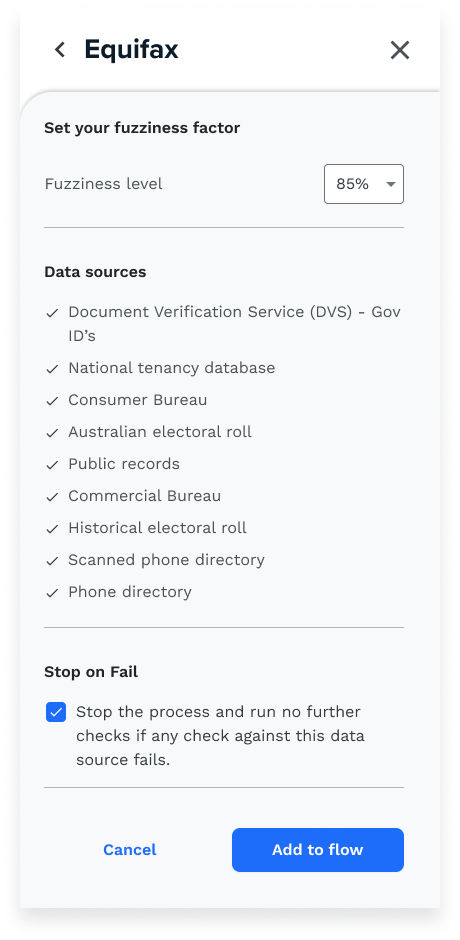
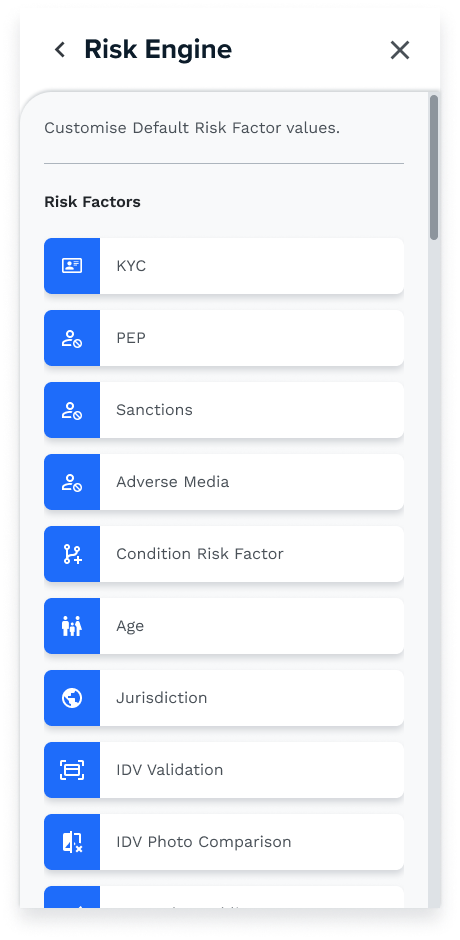
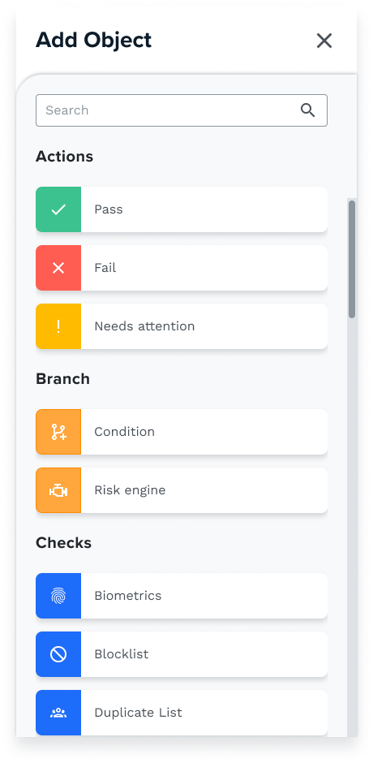
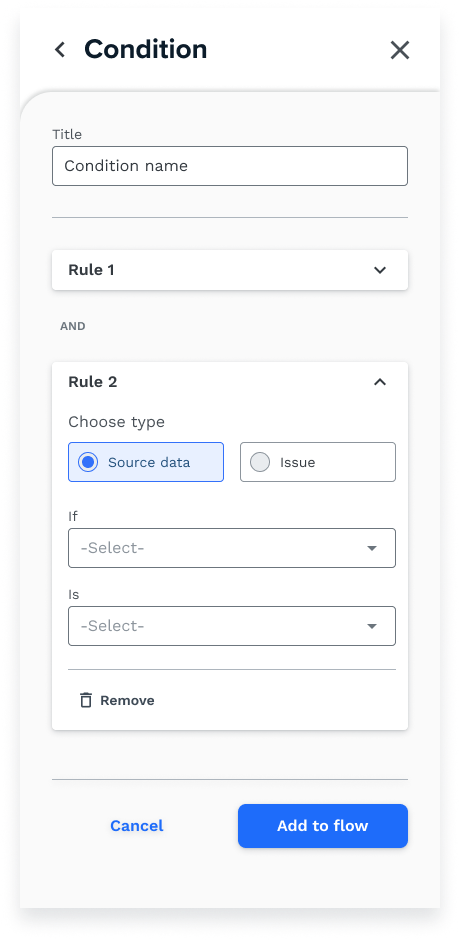
One designer, one PM, and the whole C-suite watching
From day one this project ran lean: just myself and a Product Manager. Most of the initial work fell solely on me — weekly deliverables presented directly back to company leadership.
I wore many hats. At times I was the product owner, explaining the complexities of backend processes and how they'd be represented visually. The biggest hurdle was managing leadership expectations every single week — a sink-or-swim situation that forced me to adapt to pressure fast.
"By speaking the language of CEOs, I could manage expectations and show real progress every week."
— The skill this project actually taught meTime management hit an all-time high — I was across multiple squads as the sole designer, fulfilling each of their needs. Pressure-intensive, but I'm thankful for it: the project tested my capabilities and pushed me beyond anything I'd experienced before.
Out of design, into build
Frankie Flow has left design and entered front-end development.
Hand-off is complete — detailed design specs delivered, and tickets created alongside our BAs so the build can move without me hovering over it. The canvas is on its way to customers' hands, where the config finally belongs.